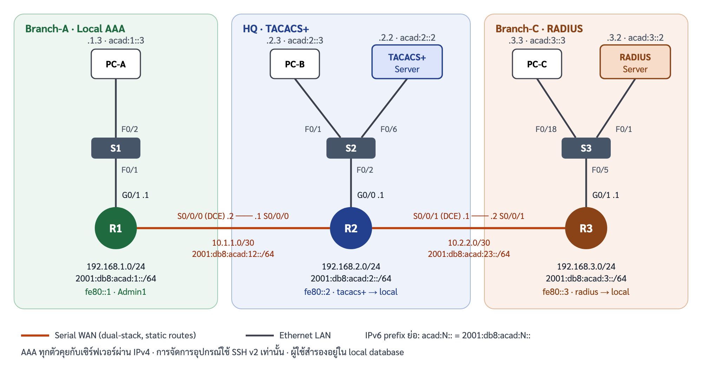

CP353301 Internetworking · Capstone Project Part II: Simulation Demo
แลบฐาน: Packet Tracer 26.2.5 Configure AAA Authentication on Cisco Routers ต่อยอดด้วย IPv6 dual-stack, SSH บน R2/R3 และการฉีดข้อผิดพลาด 3 สถานการณ์
| รหัสนักศึกษา | ชื่อ | บทบาทในวันนำเสนอ |
|---|---|---|
| 663380616-4 | นายเกรียงไกร ประเสริฐ | ผู้พูด 1: เปิด, สถานการณ์ธุรกิจ, โทโพโลยี, สรุป/คุมเวลา Q&A |
| 663380045-1 | นายปิติ มูลเทพพิชัย | ผู้พูด 2: แนวคิด AAA, มาตรฐาน, TS1 |
| 663380610-6 | นางสาวภัทราวดี ส่องศรีโรจน์ | ผู้พูด 3: การกำหนดค่า, กรณีทดสอบ, เดโมการทำงานปกติ |
| 673380577-9 | นายจีรภัทร แก้วดี | ผู้พูด 4: TS2, การวิเคราะห์เปรียบเทียบ |
คำสั่งทุกบรรทัดในเอกสารนี้คัดลอกไปวางได้ทันที ผลลัพธ์ที่แสดงเป็นตัวอย่าง ข้อความจริงใน Packet Tracer อาจต่างเล็กน้อย

| อุปกรณ์ | อินเทอร์เฟซ | IPv4 | IPv6 global | Link-local | Gateway |
|---|---|---|---|---|---|
| R1 | G0/1 | 192.168.1.1/24 | 2001:db8:acad:1::1/64 | fe80::1 | – |
| R1 | S0/0/0 (DCE) | 10.1.1.2/30 | 2001:db8:acad:12::2/64 | fe80::1 | – |
| R2 | G0/0 | 192.168.2.1/24 | 2001:db8:acad:2::1/64 | fe80::2 | – |
| R2 | S0/0/0 | 10.1.1.1/30 | 2001:db8:acad:12::1/64 | fe80::2 | – |
| R2 | S0/0/1 (DCE) | 10.2.2.1/30 | 2001:db8:acad:23::1/64 | fe80::2 | – |
| R3 | G0/1 | 192.168.3.1/24 | 2001:db8:acad:3::1/64 | fe80::3 | – |
| R3 | S0/0/1 | 10.2.2.2/30 | 2001:db8:acad:23::2/64 | fe80::3 | – |
| TACACS+ Server | NIC (S2 F0/6) | 192.168.2.2/24 | 2001:db8:acad:2::2/64 | auto | 192.168.2.1 / fe80::2 |
| RADIUS Server | NIC (S3 F0/1) | 192.168.3.2/24 | 2001:db8:acad:3::2/64 | auto | 192.168.3.1 / fe80::3 |
| PC-A | NIC (S1 F0/2) | 192.168.1.3/24 | 2001:db8:acad:1::3/64 | auto | 192.168.1.1 / fe80::1 |
| PC-B | NIC (S2 F0/1) | 192.168.2.3/24 | 2001:db8:acad:2::3/64 | auto | 192.168.2.1 / fe80::2 |
| PC-C | NIC (S3 F0/18) | 192.168.3.3/24 | 2001:db8:acad:3::3/64 | auto | 192.168.3.1 / fe80::3 |
| ใช้กับ | ชื่อผู้ใช้ | รหัสผ่าน | อยู่ที่ไหน |
|---|---|---|---|
| Console เดิม / enable | – | ciscoconpa55 / ciscoenpa55 |
ตั้งไว้ในแลบ |
| R1 | Admin1 |
admin1pa55 |
local บน R1 |
| R2 | Admin2 |
admin2pa55 |
TACACS+ Server และ local บน R2 |
| R2 | netops2 |
netops2pa55 |
TACACS+ Server เท่านั้น |
| R3 | Admin3 |
admin3pa55 |
RADIUS Server และ local บน R3 |
| R3 | netops3 |
netops3pa55 |
RADIUS Server เท่านั้น |
| shared secret | – | tacacspa55 / radiuspa55 |
router ↔ server |
| ไฟล์ | ใช้ทำอะไร |
|---|---|
configs/R1.txt, R2.txt, R3.txt |
สคริปต์วางทั้งไฟล์: คำสั่งของแลบ + SSH บน R2/R3 + IPv6 |
configs/hosts-ipv6.md |
ค่าที่ต้องกรอกผ่าน GUI ของ PC/Server และผู้ใช้ netops2/netops3 |
configs/faults/TS1-…, TS2-…, TS3-… |
คำสั่งฉีดข้อผิดพลาด → วินิจฉัย → แก้ไข → ตรวจ |
configs/running/ |
เก็บผล show running-config ของทุก router หลังทำเสร็จ (ส่งพร้อมงาน) |
26.2.5 Packet Tracer - Configure AAA Authentication on Cisco Routers.pkaciscoconpa55 → วางเนื้อหา configs/R1.txt ทั้งไฟล์ ทำแบบเดียวกันกับ R2 และ R3ถ้า router มี RSA key อยู่แล้ว IOS จะถาม
Do you really want to replace them? [yes/no]:ก่อน ให้ตอบyesแล้วพิมพ์1024เอง
radius-server host 192.168.3.2 key radiuspa55 บน R3 (แลบเตือนไว้ว่าคำสั่ง radius server ให้คะแนนไม่ถูกต้อง)configs/hosts-ipv6.md (IPv6 ของ PC/Server และผู้ใช้ netops2, netops3)grp9-AAA-Capstone.pkt (ถ้า Packet Tracer ไม่ให้บันทึกไฟล์ activity เป็น .pkt ให้บันทึกเป็น grp9-AAA-Capstone.pka) แล้วทำสำเนาสำรองไว้อีกไฟล์show running-config แล้วคัดลอกผลไปไว้ที่ configs/running/R1-running.txt (R2, R3 เช่นเดียวกัน)Admin2 ระหว่างที่ key ผิด ได้ผลแบบ a (เข้าได้ผ่าน local) หรือ b (เข้าไม่ได้) → ผลจริง: ____debug aaa authentication ☐ debug tacacs ☐ debug radius ☐ show running-config | section ☐
ตัวที่ไม่รับ ให้ข้ามในวันจริงและใช้คำสั่งทดแทนที่ระบุไว้ใน TSAdmin3 รอก่อนเข้าได้ (timeout ของ RADIUS) ประมาณ ____ วินาทีscreenshots/ เป็นแผนสำรองgrp9-AAA-Capstone.pkt (ไฟล์ที่ยังไม่ได้ฉีดข้อผิดพลาด)Admin2/Admin3 แล้ว enable) ห้ามพิมพ์ exit ระหว่างเดโม เพื่อไม่ให้ล็อกตัวเองออกตอนฉีดข้อผิดพลาดconfigs/)| อุปกรณ์ | Method list | ใช้กับ | ลำดับการตรวจสอบสิทธิ์ |
|---|---|---|---|
| R1 | default |
console | local |
| R1 | SSH-LOGIN |
vty 0 4 (SSH เท่านั้น) | local |
| R2 | default |
console + vty (SSH) | TACACS+ 192.168.2.2 → local |
| R3 | default |
console + vty (SSH) | RADIUS RAD-SERVER 192.168.3.2 → local |
หลักการสำคัญที่ต้องอธิบายได้: IOS จะลองวิธีถัดไปใน method list (local) เฉพาะเมื่อวิธีก่อนหน้าตอบ ERROR (เช่นติดต่อเซิร์ฟเวอร์ไม่ได้ / หมดเวลา) ไม่ใช่เมื่อเซิร์ฟเวอร์ตอบ FAIL (รหัสผิด) ดังนั้นการพิมพ์รหัสผิดกับเซิร์ฟเวอร์จะไม่ไปลอง local ต่อ
| เวลา | สไลด์ | ผู้พูด | ทำอะไร |
|---|---|---|---|
| 0:00–1:00 | 1–2 | ผู้พูด 1 | แนะนำกลุ่ม หัวข้อ และวาระ |
| 1:00–3:00 | 3–5 | ผู้พูด 1 | สถานการณ์ธุรกิจ, โทโพโลยี, แผนแอดเดรส v4/v6 |
| 3:00–5:00 | 6–8 | ผู้พูด 2 | AAA และ method list, มาตรฐาน RFC, การปรับปรุงสมัยใหม่ |
| 5:00–6:00 | 9–11 | ผู้พูด 3 | อธิบาย config R1/R2/R3 และตารางกรณีทดสอบ |
| 6:00–8:00 | 12–15 | ผู้พูด 3 | เดโมสด A: การทำงานปกติ |
| 8:00–10:00 | 16–18 | ผู้พูด 2 | เดโมสด B: TS1 TACACS+ key ไม่ตรง |
| 10:00–12:00 | 19–21 | ผู้พูด 4 | เดโมสด C: TS2 ลิงก์ RADIUS ล่ม |
| 12:00–14:00 | 22 | ผู้พูด 4 | เปรียบเทียบ Local / TACACS+ / RADIUS และเมทริกซ์ |
| 14:00–15:00 | 23 | ผู้พูด 1 | สรุปและรับคำถาม |
A1. Local AAA + SSH บน R1 — PC-A → Command Prompt
ssh -l Admin1 192.168.1.1
ใส่ admin1pa55 → ได้ R1> → พิมพ์ exit
พูด: "R1 ไม่มีเซิร์ฟเวอร์ จึงใช้ฐานข้อมูล local ผ่าน method list ชื่อ SSH-LOGIN และ vty รับเฉพาะ SSH"
A2. TACACS+ บน R2 — R2 console (login ค้างไว้แล้ว)
show running-config | include aaa|tacacs
แล้วที่ PC-B:
ssh -l netops2 192.168.2.1
ใส่ netops2pa55 → ได้ R2> → exit
พูด: "netops2 ไม่มีใน local ของ R2 ถ้าเข้าได้แปลว่า TACACS+ Server เป็นผู้ตรวจสอบสิทธิ์จริง"
A3. RADIUS บน R3 — PC-C
ssh -l netops3 192.168.3.1
ใส่ netops3pa55 → ได้ R3> → exit
A4. Data plane IPv4/IPv6 — PC-A
ping 192.168.3.3
ping 2001:db8:acad:3::3
(ถ้ามีเวลา) R2: show ipv6 route ชี้ static route 2 เส้นไป acad:1 และ acad:3
ทางเลือกถ้าเวลาเหลือ: สลับเป็นโหมด Simulation → Edit Filters เลือกเฉพาะ TACACS → ssh จาก PC-B อีกครั้ง → กด Play จะเห็น PDU TACACS วิ่ง R2 ↔ TACACS+ Server
ไฟล์: configs/faults/TS1-R2-tacacs-key-mismatch.txt
configure terminal
tacacs-server key tacacspa5
end
ssh -l netops2 192.168.2.1 → login ไม่ได้
แล้วลอง ssh -l Admin2 192.168.2.1 → อธิบายตามผลที่จดไว้ตอนซ้อม (a: เข้าได้เพราะ fallback ไป local / b: เข้าไม่ได้)ping 192.168.2.2
show running-config | include tacacs
debug aaa authentication
undebug all
เปิด TACACS+ Server → Services → AAA ชี้ช่อง Secret = tacacspa55 เทียบกับ router = tacacspa5
พูด: "ping ผ่าน แสดงว่าเส้นทางปกติ ปัญหาอยู่ชั้นแอปพลิเคชัน คือ shared secret ไม่ตรง ข้อมูล TACACS+ ถูกเข้ารหัสด้วย key นี้ทั้งก้อน ฝั่งเซิร์ฟเวอร์จึงอ่านคำขอไม่ออก"configure terminal
tacacs-server key tacacspa55
end
ssh -l netops2 192.168.2.1 → R2> สำเร็จไฟล์: configs/faults/TS2-S3-radius-link-down.txt
configure terminal
interface f0/1
shutdown
end
ssh -l netops3 192.168.3.1 → ไม่ได้ (ผู้ใช้มีเฉพาะบนเซิร์ฟเวอร์)
ssh -l Admin3 192.168.3.1 → เข้าได้หลังหน่วงไปครู่หนึ่ง
พูด: "ช่วงที่หน่วงคือ router รอ RADIUS จนหมดเวลา (ERROR) แล้วจึงใช้ local ตาม method list นี่คือการออกแบบเพื่อความพร้อมใช้งาน"ping 192.168.3.2
show ip interface brief
show arp
show interfaces status
configure terminal
interface f0/1
no shutdown
end
ping 192.168.3.2 สำเร็จ (ครั้งแรกอาจหาย 1 แพ็กเก็ตระหว่าง ARP) → PC-C ssh -l netops3 192.168.3.1 เข้าได้ทันทีโดยไม่หน่วง| ID | ระนาบ | ทดสอบ | คำสั่ง / ที่ไหน | ผลที่คาด | ผล |
|---|---|---|---|---|---|
| T01 | Data | IPv4 end-to-end | PC-A ping 192.168.2.3, ping 192.168.3.3; PC-B ping 192.168.3.3 |
สำเร็จทุกครั้ง | ☐ |
| T02 | Data | IPv6 end-to-end | PC-A ping 2001:db8:acad:2::3, ping 2001:db8:acad:3::3; PC-B ping 2001:db8:acad:3::3 |
สำเร็จทุกครั้ง | ☐ |
| T03 | Control | ตาราง route IPv6 | R1/R3 show ipv6 route; R2 show ipv6 route |
R1/R3 มี S ::/0, R2 มี S 2 เส้น |
☐ |
| T04 | Mgmt | AAA ของ R1 | R1 show running-config | include aaa |
aaa new-model, default local, SSH-LOGIN local |
☐ |
| T05 | Mgmt | Console R1 ด้วย local | R1 exit แล้ว login Admin1 |
ได้ R1> |
☐ |
| T06 | Mgmt | SSH R1 | PC-A ssh -l Admin1 192.168.1.1 |
ได้ R1>; R1 show ip ssh = version 2.0 |
☐ |
| T07 | Security | ปิด Telnet | PC-A telnet 192.168.1.1 |
ถูกปฏิเสธ | ☐ |
| T08 | Mgmt | TACACS+ ตอบจริง | R2 console login Admin2; PC-B ssh -l netops2 192.168.2.1 |
ได้ R2> ทั้งคู่ |
☐ |
| T09 | Mgmt | RADIUS ตอบจริง | R3 console login Admin3; PC-C ssh -l netops3 192.168.3.1 |
ได้ R3> ทั้งคู่ |
☐ |
| T10 | Security | FAIL ไม่ fallback | PC-B ssh -l netops2 192.168.2.1 ใส่รหัสผิด |
ถูกปฏิเสธ, ไม่ไปลอง local | ☐ |
| T11 | Packet | เห็นแพ็กเก็ต AAA | Simulation mode filter TACACS / RADIUS แล้วทำ T08/T09 ซ้ำ | เห็น PDU ระหว่าง router ↔ server | ☐ |
| T12 | Data | SSH ผ่าน IPv6 (ทางเลือก) | PC-A ssh -l Admin1 2001:db8:acad:1::1 |
ได้ R1> ถ้า PT รองรับ |
☐ |
ทุกสถานการณ์ใช้ขั้นตอนเดียวกัน: ฉีด → สังเกตอาการ → ตั้งสมมติฐาน → ไล่ตรวจจาก Layer 1 ขึ้นไป → แก้ → ตรวจซ้ำ คำสั่งครบทุกบรรทัดอยู่ใน configs/faults/
| ขั้น | รายละเอียด |
|---|---|
| สาเหตุจำลอง | พิมพ์ key ผิดตอนเปลี่ยน key: tacacs-server key tacacspa5 |
| อาการ | netops2 login ไม่ได้; Admin2 เข้าได้หรือไม่ขึ้นกับว่า IOS มองการตอบกลับเป็น ERROR (ไป local) หรือ FAIL |
| สมมติฐาน | (1) เซิร์ฟเวอร์ติดต่อไม่ได้ (2) ค่า host/key ผิด (3) ผู้ใช้ไม่มีในเซิร์ฟเวอร์ |
| ตรวจ | ping 192.168.2.2 ผ่าน → ตัด (1); show running-config | include tacacs เห็น key tacacspa5; debug aaa authentication; เทียบ Secret ใน Server → AAA |
| แก้ | tacacs-server key tacacspa55 |
| ยืนยัน | netops2 และ Admin2 login ผ่าน SSH ได้ |
| บทเรียน | เปลี่ยน key ทีละฝั่งในช่วงบำรุงรักษา ทดสอบด้วย user ที่มีเฉพาะบนเซิร์ฟเวอร์ และไม่ logout จาก session เดิมจนทดสอบผ่าน |
| ขั้น | รายละเอียด |
|---|---|
| สาเหตุจำลอง | shutdown ที่ S3 Fa0/1 (พอร์ตของ RADIUS Server) |
| อาการ | netops3 ไม่ได้; Admin3 เข้าได้หลังรอ timeout |
| ตรวจ | R3 ping 192.168.3.2 ไม่ผ่าน → show ip interface brief G0/1 up/up → show arp ไม่มี .2 → S3 show interfaces status Fa0/1 disabled |
| แก้ | S3 interface f0/1 → no shutdown |
| ยืนยัน | ping ผ่าน, netops3 เข้าได้ทันที |
| บทเรียน | fallback local ทำให้ผู้ดูแลยังเข้าอุปกรณ์ได้ตอนเซิร์ฟเวอร์ล่ม ระบบจริงควรมีเซิร์ฟเวอร์ 2 ตัวใน server group และมีระบบเฝ้าระวังพอร์ตเซิร์ฟเวอร์ |
| ขั้น | รายละเอียด |
|---|---|
| สาเหตุจำลอง | line vty 0 4 → transport input telnet |
| อาการ | PC-A ssh ได้ "Connection refused" แต่ ping ผ่าน |
| ตรวจ | show ip ssh ปกติ → show running-config | begin line vty เห็น transport input telnet |
| แก้ | transport input ssh |
| ยืนยัน | SSH เข้าได้, Telnet ถูกปฏิเสธ |
tacacs-server key tacacspa55interface f0/1 → no shutdownline vty 0 4 → transport input sshundebug allgrp9-AAA-Capstone.pkt ใหม่| ปัญหา | ทำอย่างไร |
|---|---|
| Packet Tracer ค้างหรือปิดเอง | เปิดไฟล์สำเนาสำรอง; ระหว่างรอ ผู้พูดคนถัดไปอธิบายสไลด์ต่อ |
| ล็อกตัวเองออกจาก console | ใช้ session ที่ค้างไว้; ถ้าไม่มี ให้ใช้ Admin2/Admin3 (local fallback) หรือเปิดไฟล์ใหม่ |
| คำสั่ง debug ไม่ทำงาน | ข้ามไปใช้ show running-config, ping และโหมด Simulation |
| เวลาไม่พอ | ตัด A4 และข้อเสริม Simulation; TS3 ไม่ต้องทำ |
| ผลไม่ตรงที่ซ้อม / PT ใช้ไม่ได้ | อธิบายจากสไลด์เดโมทีละขั้น (หน้า 13–15, 17–18, 20–21) หรือภาพหน้าจอใน screenshots/ |
TACACS+ ต่างจาก RADIUS อย่างไร TACACS+ ใช้ TCP พอร์ต 49 เข้ารหัสเนื้อหาทั้งแพ็กเก็ต และแยก authentication / authorization / accounting ออกจากกัน จึงอนุญาตคำสั่งรายคำสั่งได้ เหมาะกับการจัดการอุปกรณ์ RADIUS ใช้ UDP 1812/1813 (Cisco รุ่นเก่า 1645/1646) ซ่อนเฉพาะรหัสผ่าน และรวม authentication กับ authorization ในคำตอบเดียว เหมาะกับการยืนยันตัวตนผู้ใช้เครือข่าย เช่น 802.1X, VPN, Wi-Fi
ทำไมใส่ local ต่อท้าย group tacacs+
ถ้าเซิร์ฟเวอร์ติดต่อไม่ได้ ผู้ดูแลยังเข้าอุปกรณ์ได้ด้วยบัญชีสำรอง IOS จะไปลอง local เฉพาะกรณี ERROR (ติดต่อไม่ได้ / หมดเวลา) ถ้าเซิร์ฟเวอร์ปฏิเสธ (FAIL) จะไม่ไปลองต่อ จึงไม่เป็นช่องโหว่ให้เดารหัสผ่าน local
ถ้าพิมพ์ aaa new-model ก่อนสร้าง username จะเกิดอะไร
vty จะใช้ method list default ทันที ถ้ายังไม่มีผู้ใช้ใน local และไม่มีเซิร์ฟเวอร์ จะเข้าทาง vty ไม่ได้ จึงต้องสร้าง username ก่อนเปิด AAA เสมอ
ทำไม R1 ใช้ named list SSH-LOGIN ไม่ใช้ default
แยกนโยบายของแต่ละ line ได้ เช่น ต่อไปให้ vty ใช้เซิร์ฟเวอร์ แต่ console ยังใช้ local ได้โดยไม่กระทบกัน
username … secret ต่างจาก password อย่างไร
secret เก็บเป็น hash ทางเดียว (Packet Tracer ใช้ MD5 type 5) ส่วน password เก็บแบบอ่านกลับได้ IOS 15.3 ขึ้นไปควรใช้ algorithm-type scrypt (type 9)
ทำไมใช้ SSH และ RSA 1024 bit Telnet ส่งรหัสผ่านเป็นข้อความธรรมดา SSH version 2 ต้องการ key อย่างน้อย 768 bit ในแลบใช้ 1024 ตามโจทย์ ระบบจริงควรใช้ 2048 bit ขึ้นไป
ทำไมใช้ tacacs-server host ที่ถูกเลิกใช้แล้ว
Packet Tracer ยังไม่รองรับรูปแบบใหม่ tacacs server NAME → address ipv4 → key บนอุปกรณ์จริงควรใช้รูปแบบใหม่ ส่วน RADIUS ใช้รูปแบบใหม่ radius server RAD-SERVER แล้ว
ทำไมเพิ่ม netops2 / netops3
Admin2/Admin3 มีทั้งบนเซิร์ฟเวอร์และใน local ถ้าเข้าได้จะบอกไม่ได้ว่าใครตรวจสอบสิทธิ์ ผู้ใช้ที่มีเฉพาะบนเซิร์ฟเวอร์จึงพิสูจน์ได้ว่าเซิร์ฟเวอร์ตอบจริง
ทำไม AAA ยังคุยกับเซิร์ฟเวอร์ผ่าน IPv4 ทั้งที่เป็น dual-stack
ค่า Network Configuration บนเซิร์ฟเวอร์ใน Packet Tracer ผูกกับ IPv4 ของ router ระบบจริงใช้ address ipv6 ใน radius server / tacacs server ได้ การทำ dual-stack ในแลบนี้พิสูจน์ data plane และการจัดการอุปกรณ์ผ่าน IPv6
ทำให้เซิร์ฟเวอร์ AAA ไม่เป็นจุดล้มเหลวเดียวได้อย่างไร
ใส่เซิร์ฟเวอร์อย่างน้อย 2 ตัวใน aaa group server tacacs+ … หรือ aaa group server radius … วางคนละไซต์ แล้วยังคง local ไว้ท้ายสุด
Accounting อยู่ตรงไหน
แลบนี้ทำเฉพาะ authentication ระบบจริงควรเพิ่ม aaa accounting exec default start-stop group tacacs+ และ aaa accounting commands 15 default start-stop group tacacs+ เพื่อเก็บประวัติว่าใครพิมพ์คำสั่งอะไร
Blast-RADIUS คืออะไร CVE-2024-3596 อาศัยจุดอ่อนของ MD5 ใน RADIUS/UDP ปลอมคำตอบ Access-Reject ให้เป็น Access-Accept ได้ ป้องกันโดยบังคับใช้ Message-Authenticator ทุกแพ็กเก็ต และระยะยาวย้ายไป RADIUS over TLS (RadSec) หรือ RADIUS/1.1 (RFC 9765)